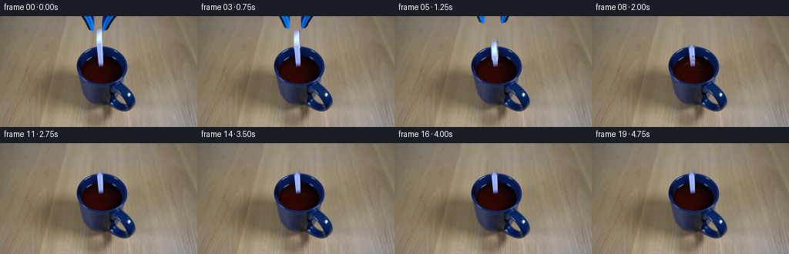
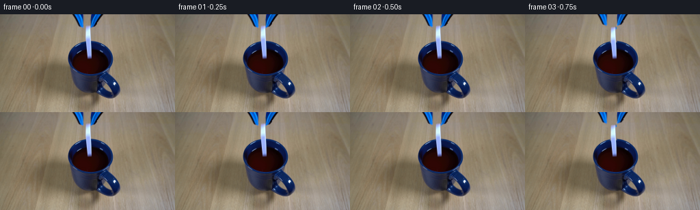
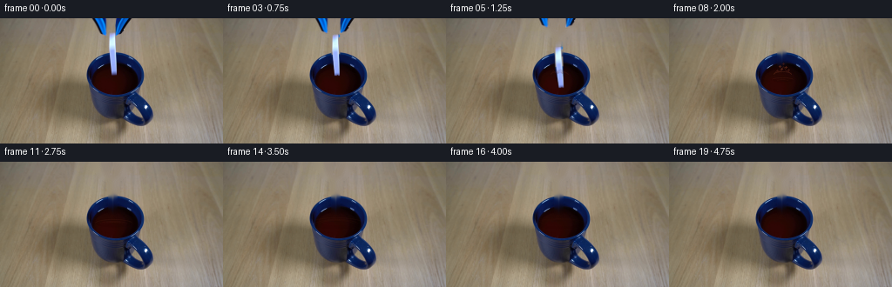
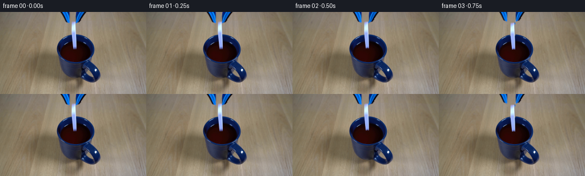
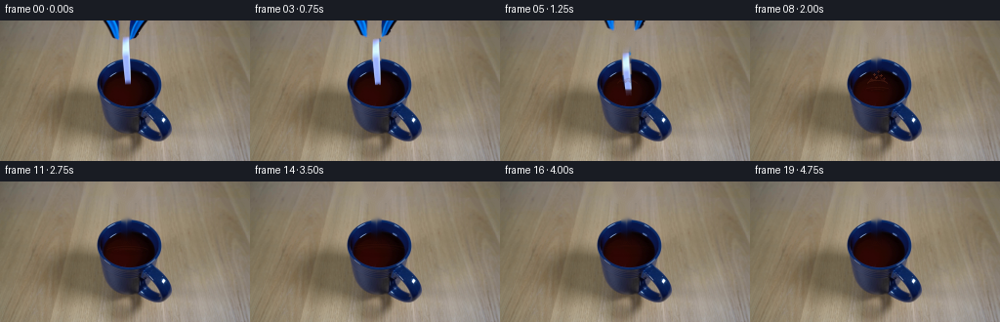

CODING AGENTS AS PIXEL WORLD MODELS
traex/GPT-5.6-Sol · 0047
点击播放 · 原生 RGB 像素
逐轮保存的候选
回放视频、检查图与代码变化。
每份候选均可单独播放。实际图片检查记录在下方工具轨迹中。
候选 01播放与检查图
点击播放 · 原生 RGB 像素


展开代码变化
--- 上一保存版本
+++ 本次保存版本
@@ -0,0 +1,278 @@
+#!/usr/bin/env python3
+"""Generate the requested locked-off domino-drop demonstration.
+
+The first image already contains the complete set and the objects at their
+starting positions. The animation therefore removes the two moving items
+with local in-painting, re-composites their photographed pixels, and adds a
+small deterministic liquid response. No assets other than the supplied
+first frame are used.
+"""
+
+from pathlib import Path
+
+import cv2
+import numpy as np
+from PIL import Image
+
+import artifact_io
+
+
+ROOT = Path(__file__).resolve().parent
+H, W = 144, 256
+
+
+def over(dst, color, alpha):
+ """Alpha-composite an RGB color image onto dst in place."""
+ a = np.asarray(alpha, np.float32)
+ if a.max(initial=0) > 1.0:
+ a = a / 255.0
+ if a.ndim == 2:
+ a = a[..., None]
+ dst[:] = np.clip(dst.astype(np.float32) * (1.0 - a) +
+ color.astype(np.float32) * a, 0, 255).astype(np.uint8)
+
+
+def transform_layer(rgb, alpha, center, dx=0.0, dy=0.0, angle=0.0):
+ """Transform a full-frame premasked photographic layer."""
+ mat = cv2.getRotationMatrix2D(center, angle, 1.0)
+ mat[0, 2] += dx
+ mat[1, 2] += dy
+ out_rgb = cv2.warpAffine(rgb, mat, (W, H), flags=cv2.INTER_LINEAR,
+ borderMode=cv2.BORDER_CONSTANT,
+ borderValue=(0, 0, 0))
+ out_a = cv2.warpAffine(alpha, mat, (W, H), flags=cv2.INTER_LINEAR,
+ borderMode=cv2.BORDER_CONSTANT, borderValue=0)
+ return out_rgb, out_a
+
+
+def make_source_layers(first):
+ """Isolate the jaws and domino and make a clean stationary plate."""
+ b = first[..., 2].astype(np.int16)
+ g = first[..., 1].astype(np.int16)
+ r = first[..., 0].astype(np.int16)
+ value = first.max(axis=2)
+
+ # The jaws are the two saturated navy/blue pieces entering from the top.
+ left_region = np.zeros((H, W), np.uint8)
+ right_region = np.zeros((H, W), np.uint8)
+ cv2.fillPoly(left_region, [np.array([(103, 0), (123, 0), (124, 18),
+ (121, 21), (115, 18)])], 255)
+ cv2.fillPoly(right_region, [np.array([(132, 0), (152, 0), (148, 9),
+ (138, 20), (132, 19)])], 255)
+ jaw_pixels = (((b - r > 20) & (b - g > 7) & (b > 55)) |
+ ((value < 103) & (b >= r))).astype(np.uint8) * 255
+
+ def jaw_alpha(region):
+ hard = cv2.bitwise_and(jaw_pixels, region)
+ hard = cv2.morphologyEx(hard, cv2.MORPH_CLOSE,
+ np.ones((3, 3), np.uint8))
+ hard = cv2.dilate(hard, np.ones((3, 3), np.uint8), iterations=1)
+ hard = cv2.bitwise_and(hard, region)
+ return cv2.GaussianBlur(hard, (3, 3), 0.55)
+
+ left_a = jaw_alpha(left_region)
+ right_a = jaw_alpha(right_region)
+
+ # The ceramic domino is a slim, blue-lit white rectangle at x=126..132.
+ domino_region = np.zeros((H, W), np.uint8)
+ cv2.rectangle(domino_region, (125, 16), (133, 40), 255, -1)
+ pale = ((b - r > 25) & (b > 145) & (g > 125)).astype(np.uint8) * 255
+ domino_hard = cv2.bitwise_and(pale, domino_region)
+ domino_hard = cv2.morphologyEx(domino_hard, cv2.MORPH_CLOSE,
+ np.ones((3, 3), np.uint8))
+ domino_hard = cv2.dilate(domino_hard, np.ones((3, 3), np.uint8),
+ iterations=1)
+ # Keep it separate from the right jaw where the two nearly touch.
+ domino_hard[:, :124] = 0
+ domino_hard[:, 134:] = 0
+ domino_a = cv2.GaussianBlur(domino_hard, (3, 3), 0.55)
+
+ # A slightly wider mask removes edge antialiasing from the clean plate.
+ erase = np.maximum.reduce([left_region, right_region, domino_region])
+ erase = cv2.dilate(erase, np.ones((3, 3), np.uint8), iterations=1)
+ # Telea works well here: all removed regions are narrow and surrounded by
+ # the same softly textured set background.
+ clean = cv2.inpaint(first, erase, 4.0, cv2.INPAINT_TELEA)
+
+ layers = []
+ for alpha in (left_a, right_a, domino_a):
+ rgb = first.copy()
+ rgb[alpha == 0] = 0
+ layers.append((rgb, alpha))
+ return clean, layers
+
+
+def liquid_clip():
+ """Soft mask of the visible dark liquid, inside the mug's blue rim."""
+ mask = np.zeros((H, W), np.uint8)
+ cv2.ellipse(mask, (132, 70), (27, 18), 0, 0, 360, 255, -1,
+ lineType=cv2.LINE_AA)
+ # Avoid painting over most of the near-side ceramic rim.
+ mask[88:] = 0
+ return cv2.GaussianBlur(mask, (3, 3), 0.45)
+
+
+def draw_ripples(frame, index, clip):
+ """Perspective-compressed rings on the coffee-like dark liquid."""
+ if index < 5:
+ return
+ effect = np.zeros_like(frame)
+ alpha = np.zeros((H, W), np.uint8)
+
+ # Ring age is measured from first contact (frame 5). Several waves are
+ # phase-offset, with quickly diminishing contrast.
+ age = index - 5
+ fade = max(0.0, 1.0 - age / 13.5)
+ for k in range(3):
+ local_age = age - 1.7 * k
+ if local_age < 0:
+ continue
+ rx = int(3 + local_age * 3.0)
+ ry = max(1, int(1 + local_age * 0.58))
+ if rx > 31:
+ continue
+ strength = int((86 - 15 * k) * fade)
+ col = (104 + 8 * k, 45 + 4 * k, 29 + 3 * k)
+ cv2.ellipse(effect, (130, 70 + min(k, 1)), (rx, ry), 0, 180, 360,
+ col, 1, lineType=cv2.LINE_AA)
+ cv2.ellipse(alpha, (130, 70 + min(k, 1)), (rx, ry), 0, 180, 360,
+ strength, 1, lineType=cv2.LINE_AA)
+ # A darker far-side trough makes the tiny rings read as liquid rather
+ # than as graphic lines.
+ cv2.ellipse(effect, (130, 70), (max(1, rx - 1), ry), 0, 0, 180,
+ (12, 3, 3), 1, lineType=cv2.LINE_AA)
+ cv2.ellipse(alpha, (130, 70), (max(1, rx - 1), ry), 0, 0, 180,
+ max(0, strength // 2), 1, lineType=cv2.LINE_AA)
+ alpha = ((alpha.astype(np.uint16) * clip.astype(np.uint16)) // 255).astype(np.uint8)
+ over(frame, effect, alpha)
+
+
+def draw_splash(frame, index):
+ """Small crown and droplets during impact, all in dark liquid colors."""
+ # Strength peaks one frame after first contact and collapses rapidly.
+ strength_by_frame = {5: 0.28, 6: 0.78, 7: 1.0, 8: 0.62, 9: 0.24}
+ s = strength_by_frame.get(index, 0.0)
+ if not s:
+ return
+ ink = np.zeros_like(frame)
+ a = np.zeros((H, W), np.uint8)
+ color = (91, 36, 23)
+ light = (137, 65, 41)
+
+ # Perspective crown around x=130, y=61.
+ rise = int(round(11 * s))
+ points = np.array([(120, 64), (123, 60), (125, 63 - rise // 3),
+ (128, 60), (131, 62 - rise), (134, 60),
+ (137, 63 - rise // 3), (140, 64)], np.int32)
+ cv2.polylines(ink, [points], False, color, 1, lineType=cv2.LINE_AA)
+ cv2.polylines(a, [points], False, int(150 * s), 1,
+ lineType=cv2.LINE_AA)
+ cv2.ellipse(ink, (130, 64), (10, 3), 0, 180, 360, light, 1,
+ lineType=cv2.LINE_AA)
+ cv2.ellipse(a, (130, 64), (10, 3), 0, 180, 360, int(125 * s), 1,
+ lineType=cv2.LINE_AA)
+
+ droplets = [(-10, -8, 1), (-5, -15, 1), (2, -20, 1),
+ (8, -14, 1), (12, -9, 1), (-2, -11, 1)]
+ for j, (dx, dy, radius) in enumerate(droplets):
+ # Droplets appear progressively as the splash grows; deterministic
+ # offsets avoid frame-to-frame sparkle.
+ if s < 0.55 and j not in (0, 4):
+ continue
+ x = 130 + int(dx * s)
+ y = 64 + int(dy * s)
+ rr = radius + (1 if s > .9 and j == 2 else 0)
+ cv2.ellipse(ink, (x, y), (rr, max(1, rr - 1)), 0, 0, 360,
+ light if j % 2 else color, -1, lineType=cv2.LINE_AA)
+ cv2.ellipse(a, (x, y), (rr, max(1, rr - 1)), 0, 0, 360,
+ int(190 * s), -1, lineType=cv2.LINE_AA)
+ over(frame, ink, a)
+
+
+def make_frames(first):
+ clean, (left, right, domino) = make_source_layers(first)
+ clip = liquid_clip()
+ frames = []
+
+ # Domino top positions: a short hold, then acceleration under gravity.
+ domino_top = {0: 16, 1: 16, 2: 16, 3: 18, 4: 23,
+ 5: 32, 6: 45, 7: 59}
+ # Jaw opening and withdrawal begins just before release.
+ jaw_motion = {
+ 0: (0, 0), 1: (0, 0), 2: (1, -1), 3: (2, -3),
+ 4: (4, -6), 5: (5, -10), 6: (7, -15), 7: (9, -21)
+ }
+
+ for i in range(20):
+ if i <= 1:
+ frame = first.copy()
+ frames.append(frame)
+ continue
+ frame = clean.copy()
+
+ # Liquid motion is behind both the falling object and airborne drops.
+ draw_ripples(frame, i, clip)
+
+ if i in jaw_motion:
+ spread, up = jaw_motion[i]
+ lr, la = transform_layer(*left, (114, 9), dx=-spread, dy=up,
+ angle=-0.45 * spread)
+ rr, ra = transform_layer(*right, (143, 9), dx=spread, dy=up,
+ angle=0.45 * spread)
+ over(frame, lr, la)
+ over(frame, rr, ra)
+
+ if i in domino_top:
+ top = domino_top[i]
+ dy = top - 16
+ drift = 0 if i < 5 else (i - 4) * 0.55
+ angle = max(0, i - 3) * 1.05
+
+ # A restrained exposure trail conveys the fast fall at 4 fps.
+ if i in (5, 6):
+ for frac, opacity in ((0.35, 0.10), (0.68, 0.16)):
+ prev_top = domino_top[i - 1]
+ mid_top = prev_top + (top - prev_top) * frac
+ tr, ta = transform_layer(*domino, (129, 28),
+ dx=drift * frac,
+ dy=mid_top - 16,
+ angle=angle * frac)
+ ta = (ta.astype(np.float32) * opacity).astype(np.uint8)
+ over(frame, tr, ta)
+
+ dr, da = transform_layer(*domino, (129, 28), dx=drift, dy=dy,
+ angle=angle)
+ # The last visible frame is already mostly below the surface.
+ if i == 7:
+ da = (da.astype(np.float32) * 0.72).astype(np.uint8)
+ over(frame, dr, da)
+
+ # Replace submerged portions by the photographed liquid. This is
+ # the front-surface occlusion/absorption, strongest at frame 7.
+ if i >= 6:
+ cover = clip.copy().astype(np.float32)
+ yy = np.arange(H)[:, None]
+ cover *= (yy >= (59 if i == 6 else 62))
+ cover *= 0.47 if i == 6 else 0.88
+ over(frame, clean, cover.astype(np.uint8))
+
+ draw_splash(frame, i)
+ frames.append(frame)
+
+ out = np.stack(frames).astype(np.uint8)
+ # Contract-critical identity, even if implementation details above change.
+ out[0] = first
+ return out
+
+
+def main():
+ first = np.asarray(Image.open(ROOT / "first_frame.png").convert("RGB"),
+ dtype=np.uint8)
+ if first.shape != (H, W, 3):
+ raise ValueError(f"unexpected first-frame shape: {first.shape}")
+ frames = make_frames(first)
+ artifact_io.save(frames, ROOT)
+
+
+if __name__ == "__main__":
+ main()
候选 02播放与检查图
点击播放 · 原生 RGB 像素


展开代码变化
--- 上一保存版本
+++ 本次保存版本
@@ -75,7 +75,9 @@
# The ceramic domino is a slim, blue-lit white rectangle at x=126..132.
domino_region = np.zeros((H, W), np.uint8)
- cv2.rectangle(domino_region, (125, 16), (133, 40), 255, -1)
+ # It continues in front of the dark surface to y=63; that lower, blue-lit
+ # half is easy to mistake for a reflection, but is part of the domino.
+ cv2.rectangle(domino_region, (125, 16), (133, 64), 255, -1)
pale = ((b - r > 25) & (b > 145) & (g > 125)).astype(np.uint8) * 255
domino_hard = cv2.bitwise_and(pale, domino_region)
domino_hard = cv2.morphologyEx(domino_hard, cv2.MORPH_CLOSE,
@@ -233,14 +235,14 @@
for frac, opacity in ((0.35, 0.10), (0.68, 0.16)):
prev_top = domino_top[i - 1]
mid_top = prev_top + (top - prev_top) * frac
- tr, ta = transform_layer(*domino, (129, 28),
+ tr, ta = transform_layer(*domino, (129, 40),
dx=drift * frac,
dy=mid_top - 16,
angle=angle * frac)
ta = (ta.astype(np.float32) * opacity).astype(np.uint8)
over(frame, tr, ta)
- dr, da = transform_layer(*domino, (129, 28), dx=drift, dy=dy,
+ dr, da = transform_layer(*domino, (129, 40), dx=drift, dy=dy,
angle=angle)
# The last visible frame is already mostly below the surface.
if i == 7:
候选 03播放与检查图
点击播放 · 原生 RGB 像素

展开代码变化
--- 上一保存版本
+++ 本次保存版本
@@ -244,8 +244,16 @@
dr, da = transform_layer(*domino, (129, 40), dx=drift, dy=dy,
angle=angle)
- # The last visible frame is already mostly below the surface.
- if i == 7:
+ # The opening is seen obliquely: once released, the lower part is
+ # hidden by dark liquid and by the mug's near-side rim. Fade the
+ # photographic layer at that moving occlusion boundary rather
+ # than allowing it to paint across the front of the mug.
+ if i >= 4:
+ cutoff = {4: 71, 5: 70, 6: 69, 7: 66}[i]
+ rows = np.arange(H, dtype=np.float32)[:, None]
+ visibility = np.clip((cutoff + 1.5 - rows) / 2.5, 0, 1)
+ da = (da.astype(np.float32) * visibility).astype(np.uint8)
+ if i == 7: # seen through a thin wet meniscus at final entry
da = (da.astype(np.float32) * 0.72).astype(np.uint8)
over(frame, dr, da)
可观测工具轨迹
实际执行的命令与返回图片。
命令 1exit 0
/bin/bash -lc "cat GENERATION_RULES.md && printf '\\n--- PROMPT ---\\n' && cat prompt.txt"
命令 2exit 127
/bin/bash -lc "find . -maxdepth 2 -type f -printf '%p\\n' | sort && file first_frame.png && python3 - <<'PY'
from PIL import Image
im=Image.open('first_frame.png')
print(im.mode, im.size)
print('extrema', im.getextrema())
PY"命令 3exit 0
/bin/bash -lc "python3 - <<'PY'
from PIL import Image
import numpy as np
im=np.array(Image.open('first_frame.png').convert('RGB'))
print(im.shape, im.dtype, 'min',im.min((0,1)),'max',im.max((0,1)),'mean',im.mean((0,1)))
# quantize color means into 16-level, top colors
q=(im//16)*16+8
from collections import Counter
for c,n in Counter(map(tuple,q.reshape(-1,3))).most_common(25): print(c,n, round(n/im.shape[0]/im.shape[1],4))
PY
python3 - <<'PY'
try:
import cv2; print('cv2',cv2.__version__)
except Exception as e: print('no cv2',e)
PY"命令 4exit 0
/bin/bash -lc "python3 - <<'PY'
import cv2, numpy as np
im=cv2.imread('first_frame.png')[:,:,::-1]
h,w,_=im.shape
# HSV masks and components
hsv=cv2.cvtColor(im[:,:,::-1],cv2.COLOR_BGR2HSV) # oops im RGB then convert as BGR interpreted = RGB? cv wants BGR; original BGR easier
bgr=cv2.imread('first_frame.png'); hsv=cv2.cvtColor(bgr,cv2.COLOR_BGR2HSV)
masks={
'blue': ((hsv[:,:,0]>90)&(hsv[:,:,0]<140)&(hsv[:,:,1]>80)&(hsv[:,:,2]<180)),
'white': ((hsv[:,:,1]<35)&(hsv[:,:,2]>180)),
'dark': (hsv[:,:,2]<55),
'red_dark': (((hsv[:,:,0]<12)|(hsv[:,:,0]>170))&(hsv[:,:,1]>70)&(hsv[:,:,2]<130)),
'hi_sat': (hsv[:,:,1]>100),
}
for name,m in masks.items():
n, lab, st, cen=cv2.connectedComponentsWithStats(m.astype('uint8'),8)
comps=[]
for i in range(1,n):
x,y,ww,hh,a=st[i]
if a>=5: comps.append((a,(x,y,ww,hh),tuple(np.round(cen[i],1))))
comps.sort(reverse=True)
print('\\n',name,'total',m.sum(),'components',comps[:20])
# row/col average RGB selected
print('\\nrow means')
for y in range(0,h,8): print(y, np.round(im[y].mean(0)).astype(int))
# 16x9 blocks mean RGB
print('\\nblocks dominant mean 16x16')
for y in range(0,h,16):
print(' '.join('%02x%02x%02x'%tuple(im[y:y+16,x:x+16].mean((0,1)).astype(int)) for x in range(0,w,16)))
PY"命令 5exit 0
/bin/bash -lc "python3 - <<'PY'
from PIL import Image
import numpy as np, cv2
rgb=np.array(Image.open('first_frame.png').convert('RGB'))
hsv=cv2.cvtColor(rgb,cv2.COLOR_RGB2HSV)
# every 2x2 central classify median
for y in range(0,132,2):
s=''
for x in range(88,188,2):
R=rgb[y:y+2,x:x+2].mean((0,1)); H=hsv[y:y+2,x:x+2].mean((0,1)); h,ss,v=H
# deviation from local background approximated? semantic palette
if v<38: c='K'
elif ss<25 and v>190:c='W'
elif ss<45 and v>145:c='w'
elif ((h<10 or h>170) and ss>100 and v<130):c='R'
elif h>93 and h<138 and ss>100 and v<170:c='B'
elif h>90 and h<145 and ss>50 and v<140:c='b'
elif v<75:c='d'
elif ss>75 and h<20:c='r'
elif ss<45:c='g'
else:c='.'
s+=c
print(f'{y:03d} {s}')
PY"命令 6exit 0
/bin/bash -lc "python3 - <<'PY'
import cv2,numpy as np
im=cv2.imread('first_frame.png'); hsv=cv2.cvtColor(im,cv2.COLOR_BGR2HSV)
for name,m in [('blue',((hsv[:,:,0]>90)&(hsv[:,:,0]<140)&(hsv[:,:,1]>70)&(hsv[:,:,2]<190))),('red',(((hsv[:,:,0]<15)|(hsv[:,:,0]>170))&(hsv[:,:,1]>70)&(hsv[:,:,2]<150))),('dark',(hsv[:,:,2]<75)),('light',((hsv[:,:,1]<50)&(hsv[:,:,2]>170)))]:
print('\\n'+name)
for y in range(0,144,2):
xs=np.where(m[y])[0]
# runs >=2, central x 80:200
runs=[]
if len(xs):
starts=np.r_[0,np.where(np.diff(xs)>1)[0]+1]; ends=np.r_[starts[1:]-1,len(xs)-1]
for a,b in zip(starts,ends):
x1,x2=xs[a],xs[b]
if x2>=80 and x1<200 and x2-x1>=1:runs.append((x1,x2))
if runs: print(f'{y:03}: '+','.join(f'{a}-{b}' for a,b in runs))
PY"命令 7exit 0
/bin/bash -lc "cat artifact_io.py && python3 - <<'PY'
import cv2,numpy as np
im=cv2.imread('first_frame.png')
# print RGB/HSV grid each pixel encoded categories in x98:178 y0:45 and x95:180 y35:130, downsample no averaging categories based against smooth background
rgb=im[:,:,::-1]; hsv=cv2.cvtColor(im,cv2.COLOR_BGR2HSV)
chars=[]
for y in range(0,45):
s=''
for x in range(95,180):
h,sa,v=hsv[y,x]
if v<45:c='K'
elif sa<25 and v>205:c='W'
elif sa<55 and v>170:c='w'
elif ((h<12 or h>170) and sa>80 and v<150):c='R'
elif 88<h<145 and sa>85 and v<185:c='B'
elif 88<h<145 and sa>45 and v<170:c='b'
elif v<80:c='d'
elif sa<50:c='g'
elif h<25 and sa>70:c='r'
else:c='.'
s+=c
print(f'{y:03d} {s}')
PY"命令 8exit 0
/bin/bash -lc "python3 - <<'PY'
from PIL import Image
import numpy as np
im=np.array(Image.open('first_frame.png').convert('RGB'))
for y in range(12,42):
print('y',y, ' '.join(f'{x}:{tuple(im[y,x])}' for x in range(120,138)))
PY"命令 9exit 0
/bin/bash -lc "python3 - <<'PY'
from PIL import Image
import numpy as np
im=np.array(Image.open('first_frame.png').convert('RGB'))
for y in [0,5,10,15,18,20,25,30,35,38,39,40,41,42,45,50,55,60,65,70,75,80,85,90,95,100,105,110,115,120,125,130,135,140,143]:
print('\\ny',y)
for x in range(95,181):
r,g,b=map(int,im[y,x]);
# list significant blue/dark/bright vs bg
if (b-r>35 or max(r,g,b)<70 or (max(r,g,b)-min(r,g,b)<35 and max(r,g,b)>185)):
print(x,(r,g,b),end='; ')
print()
PY"命令 10exit 0
/bin/bash -lc "python3 generate.py && python3 - <<'PY'
from pathlib import Path
from PIL import Image
import numpy as np
f=np.stack([np.array(Image.open(f'frames/{i:02d}.png')) for i in range(20)])
a=np.array(Image.open('first_frame.png').convert('RGB'))
print('shape/dtype',f.shape,f.dtype)
print('frame0 exact',np.array_equal(f[0],a),'maxdiff',np.abs(f[0].astype(int)-a).max())
print('changed pixels:',[int(np.any(f[i]"'!=f[max(0,i-1)],axis=2).sum()) for i in range(20)])
print('"'files',[(p.name,p.stat().st_size) for p in map(Path,['pixels.npz','inspection.png','index.html'])])
PY"命令 11exit 0
/bin/bash -lc "python3 generate.py && python3 - <<'PY'
import numpy as np
from PIL import Image
f=np.stack([np.array(Image.open(f'frames/{i:02d}.png')) for i in range(20)])
a=np.array(Image.open('first_frame.png').convert('RGB'))
print(f.shape,f.dtype,np.array_equal(f[0],a))
print('mean abs to first', [round(np.abs(x.astype(float)-a).mean(),2) for x in f])
print('pixel frame means', [tuple(np.round(x.mean((0,1)),1)) for x in f])
PY"命令 12exit 0
/bin/bash -lc "python3 generate.py && python3 - <<'PY'
from PIL import Image
import numpy as np, json, pathlib
first=np.array(Image.open('first_frame.png').convert('RGB'))
frames=np.stack([np.array(Image.open(f'frames/{i:02d}.png').convert('RGB')) for i in range(20)])
assert frames.shape==(20,144,256,3) and frames.dtype==np.uint8
assert np.array_equal(frames[0], first)
z=np.load('pixels.npz')['pixels']
assert z.shape==(144,256,20)
re=((z[:,:,0]>>16)&255).astype(np.uint8)
assert np.array_equal(re,first[:,:,0])
print('VALID',frames.shape,frames.dtype,'frame0 exact; pixels',z.shape,z.dtype)
print('output bytes',pathlib.Path('pixels.npz').stat().st_size)
PY
ls -la | sed -n '1,30p'"保存候选 3 份；完成命令 12 次；可验证图片返回 0 张。原始 API 响应与完整日志保留在本地。